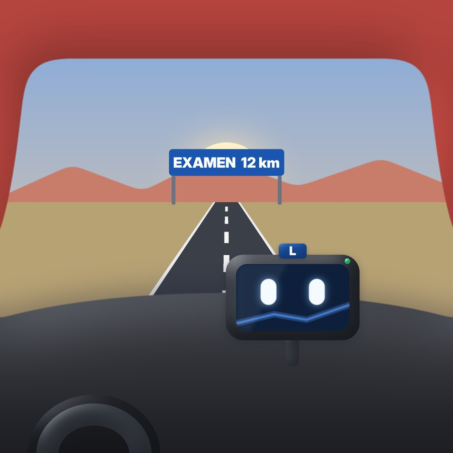
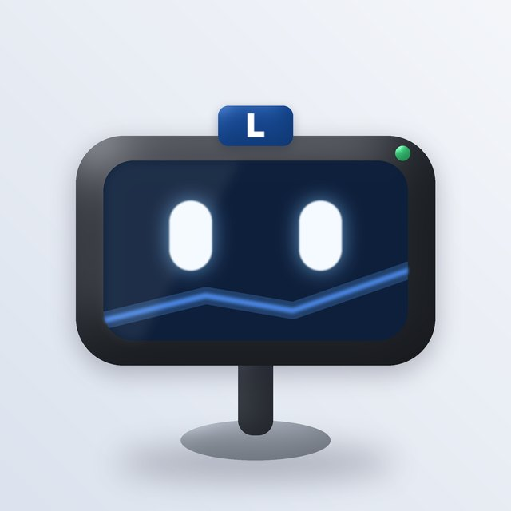
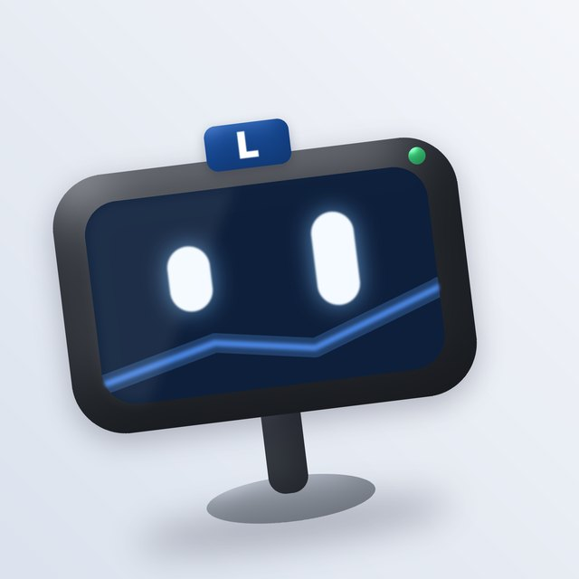
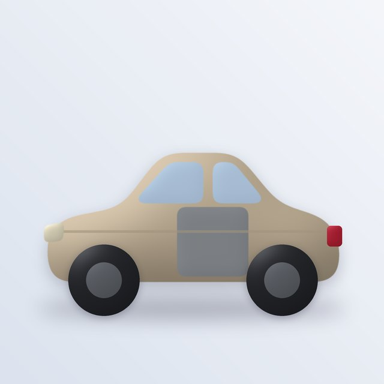
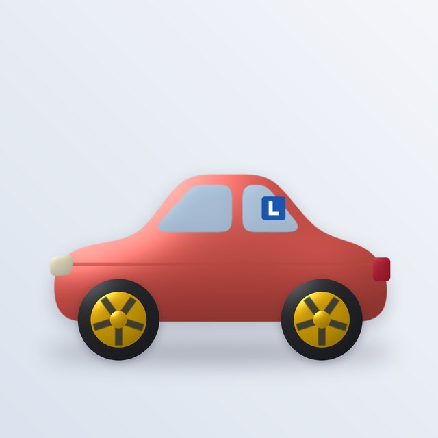
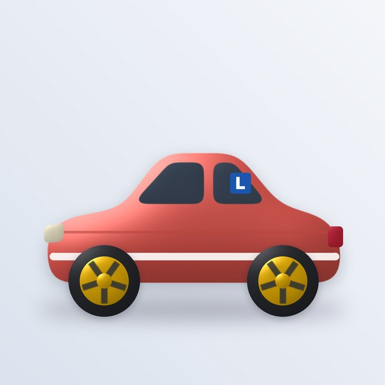
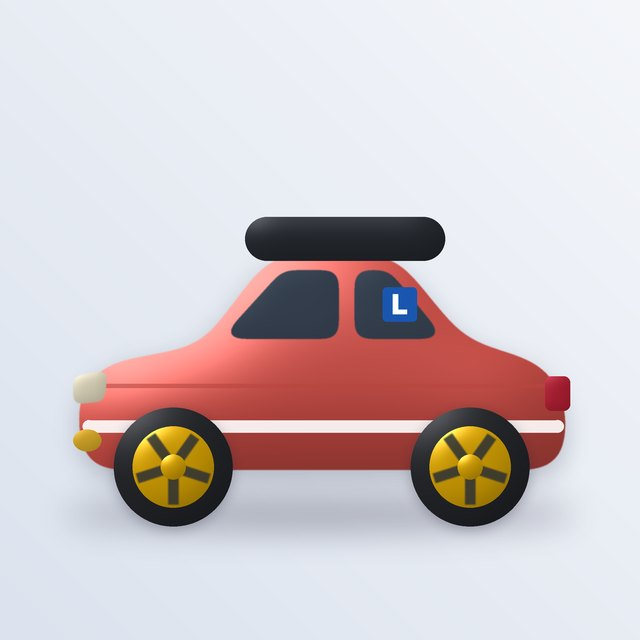
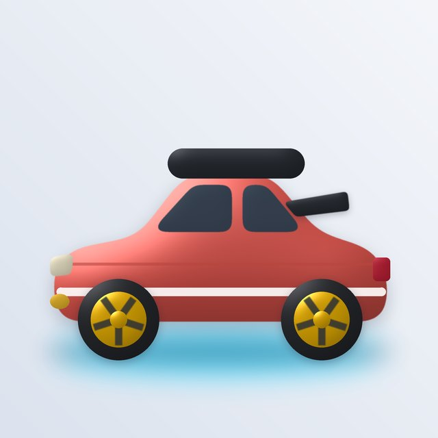

Relanti
Design proposal, v0.3 (4 Nov 2026). Relanti is a native iOS and Android app for passing the Spanish DGT theory exam for the B licence. It reuses Volantón's flow (one shell, levels you land on two different days, calm rewards, content as data) and replaces the airport with a road trip: one road with a stop for every topic, ending at the exam centre. You drive your own car, Relanti, and the GPS on its dashboard guides you there. Use the switch at the top to see the mocks in light or dark.
A road trip with a clear destination
Why a road, not a planet
Volantón invented a planet because it had to hold any school subject. Relanti has one destination, the exam, so the metaphor can be literal: a single road with stops, kilometres and signs. The material is itself about roads, so the theme teaches while it decorates.
The name carries the tone
Relanti echoes ralentí, the engine at idle. The promise is calm, steady study with no panic before the exam. Turbo is the counterweight: the voice that gets you moving.
Who it's for
People preparing the B licence theory test: mostly 17 to 25, plus adults coming back to it. There is no parent gate and the tone is a direct tú. Everything is measured against the real exam: 30 questions, 30 minutes, at most 3 mistakes.
The GPS guides, Relanti is yours
Two characters with two jobs: one instructs you and one you personalise. Turbo is drawn with the same puffy 3D script as Rumbo, now in Scripts/turbo/turbo.py.

El GPS que te enseña
Turbo is the sat nav mounted on your dashboard, with glowing eyes on his screen and an L tag on top. He knows the route to the exam and talks the way a good instructor does, one short line at a time. A sat nav suits a single road, it can't be confused with your car, and "Recalculando…" gives him a calm, funny way to handle mistakes.

Atento Explica
Explica ¡Bien!
¡Bien!
¿Desvío? Recalculando
RecalculandoEyes drawn in code, so they move
The device is a rendered image and the eyes are drawn on top, like the screen of a real GPS. In the app they're a SwiftUI and Compose shape, so blinking, looking, the happy squint and the "Recalculando" spinner are smooth, cheap, and the same on both platforms. They follow Reduce Motion.
The GPS's rules
- One line at a time. A truco is never longer than two lines.
- "Recalculando", never "mal". Every miss gets the same calm line, the right answer and the truco.
- Always in the corner. On every question, photo or not, he sits in the corner with you.
- Silent in simulacros. His screen shows only the clock, because the real exam gives no help.
- His screen does the work. It can show eyes, a sign, a turn arrow or a speed.
- Never sad, never broken. He has no low battery and no "you missed a day".
- Optional voice, read aloud like a real sat nav.
What do we call him?
"Turbo" is crowded (there are driving schools called Turbo), and a GPS doesn't need a car-part name. Options:
Relanti, tu coche: it evolves as you study
As with Volantón's owlet, you can see your car grow. You start with a faded second-hand car, and each points milestone fits one upgrade, so studying is how you do it up. Body, colour and name are yours from day one, and nothing is ever taken away.

0 ptsDe segunda manoFaded paint, primer door
6 ptsLlantasAlloy wheels
8 ptsListo para el examenTinted windows, stripe
12 ptsRuta largaRoof box, fog lamps
15 ptsCarnet completoSpoiler, underglow, L offBody types (utilitario, familiar, furgo) and colours are chosen at the start. Later we could unlock extra bodies, like a convertible or a classic, at milestones. Share cards show the car without its upgrades, so a shared picture never reveals your level.
How we got here
Every direction is rendered on the Turbo renders page, and the full flow with the GPS is on Turbo on the dashboard.
Name: Relanti
Web searches found no app, company or trademark called Relanti, and nothing in our sector. Register it early: an OEPM national mark is about 150 €, an EU mark about 850 €.
Name: Turbo
"Turbo" is registered in many classes, and driving schools already use it: Turbo Autoescuelas (Navarra) and Autoescola Turbo (Catalonia). Keep Turbo as a character name only, never on the store listing or icon. That's the same approach that saved Rumbo.
Still to do by hand: the official registers (EUIPO TMview, OEPM Localizador) block automated access, so the name check above is a web check. Run "Relanti" and "Turbo" in TMview for classes 9 and 41 before launch.
Rename everything for the road
Volantón's best lesson: the glossary is the product. It lives in one copy file both apps read (content/copy/es.json).
| Generic | Relanti | Meaning | Volantón had |
|---|---|---|---|
| Home | La Ruta | the view through your windscreen, km to the exam | Aeropuerto |
| Guide | El GPS (name open) | the sat nav on your dashboard | Rumbo |
| Avatar | Relanti, tu coche | your car: body, colour, name, kit | Tu volantón |
| Topic (tema) | Etapa | a stop on the road, e.g. Villaseñal | Continente |
| Level | Tramo (AD-102) | a stretch of road with a road number | Vuelo (MT 204) |
| Leave the path | Salida | a motorway exit sign to any etapa, your place is kept | |
| Wrong answer | Recalculando… | Turbo's line on every miss | Casi. |
| Results screen | Llegada | arrival at the end of the tramo | Aterrizaje |
| Level mastered | Ticket de peaje | a toll ticket clipped to your sun visor | Sello |
| Topic mastered | Imán | a fridge magnet from that stop | Todo el continente |
| XP | Kilómetros | km driven, about 10 per active minute | Millas |
| Streak | Días al volante | days behind the wheel | Días de ruta |
| Streak freeze | Área de descanso | a rest stop that keeps the streak | Escala |
| Daily goal | Hoja de ruta | today's plan | Plan de vuelo |
| Mastery total | Puntos del carnet | 0 to 15 points, one per etapa plus exam milestones | Sellos totales |
| Rank | Rango | Copiloto → Leyenda de la carretera | Pasajero → Leyenda del cielo |
| Spaced review | Retrovisor | looking back at what you passed | Vuelo de vuelta |
| Most-missed questions | Puntos negros | the DGT term for accident black spots | |
| Placement | Pasar la ITV | a quick check of what you already know | Facturación |
| Mock exam | Simulacro | the real format, Turbo silent | |
| Exam readiness | Semáforo | red, amber, green: are you ready? | |
| Level board | Panel | a motorway variable-message panel | Salidas |
| Collection | Guantera | sun visor of tickets, fridge of magnets, Trucos | Maleta |
| Paid content | Autopista de peaje | etapas unlocked by the one-time payment | Familia |
| Tips library | Trucos de Turbo | every truco you've unlocked, to revise | Trucos |
One recommended road, an exit to every etapa
Someone tired of speed limits should be able to go and do vehicle types. Research supports both a guided order and free choice:
Choice helps motivation
A meta-analysis of 41 studies (Patall, Cooper & Robinson, 2008) found that choice raises motivation, effort and performance, especially with a few meaningful options.
Mixing topics helps the exam
Interleaved practice has a moderate benefit overall (Brunmair & Richter, 2019), and the largest for telling similar-looking visual categories apart. That's exactly signs. The real exam mixes topics too.
But learn each thing once in order
New material is easier in blocks, and some rules build on others: you need the signs before priority at junctions.
The road follows the order of the DGT's simplified manual, so it makes sense to anyone coming from an autoescuela. Every etapa has its own exit: the switch looks like a blue motorway exit sign ("Salida 7 · Taller · Tipos de vehículo"), and taking it keeps your place on the main road. Tramos go in order inside an etapa. After three rounds of the same etapa, Turbo suggests "¿Cambiamos de aires?" with two other etapas to choose from. Simulacros are always available.
| Etapa (stop) | Code | DGT topics it covers |
|---|---|---|
| Villaseñal | SE | Vertical signs, road markings, traffic lights, agents, beacons |
| Cruce de la Prioridad | PR | Right of way, intersections, roundabouts, merging |
| Recta de la Velocidad | VE | Speed limits, safety distance, braking |
| Paso del Adelanto | AD | Overtaking, lane changes, motorways and dual carriageways |
| Plaza del Aparcamiento | PA | Stopping, parking, reversing, U-turns |
| Faro Nocturno | AL | Lights, signals, visibility, bad weather |
| Taller | VH | Vehicle types, documents, ITV, maintenance, tyres, loads, insurance |
| Mirador Alerta | FH | Alcohol, drugs, medicines, fatigue, distractions |
| Área PAS | PS | Passive safety, belts and child seats, accidents, first aid |
| Oficina de Puntos | PP | Licences, points, offences and penalties |
| Valle Eco | EC | Efficient driving and the environment |
| Centro de examen | EX | Simulacros in the real format, at the end of the road |
Autopista blue, line yellow, sunset, asphalt
Popular colour psychology has thin evidence. Even the famous "red lowers test scores" finding did not survive a 2020 meta-analysis of 38 samples (Gnambs). So colours are chosen for what does hold: meanings people already know from the road, contrast and colour-blind safety (about 1 in 12 men), and standing out from DGT test apps that look like government forms. We don't copy exact DGT colours.
Autopista
Blue is the only action colour. Yellow is for rewards (km, tickets), sunset orange for streaks and the Retrovisor, and asphalt for text and roads. Green and red are kept for right and wrong only, always with an icon.
Atardecer
Warmest and most distinctive, with sunset orange leading. White text on orange needs a darker shade to pass contrast.
Asfalto
A night drive. Proposed as A's dark mode for evening study rather than as the main look.
A condensed grotesk in the spirit of Spanish road signs: Barlow Condensed, open licence, on both platforms. Used for titles, codes, numbers and the Panel.
The system face (SF Pro, Roboto) with Dynamic Type for questions, at least 15 pt. Questions must read as fast and clearly as the exam.
Turbo's screen face (two glowing eyes and a route line) on Autopista blue. As with Rumbo, the guide becomes the icon, and Turbo's name stays off it.
Twelve screens, one app
Tabs: Ruta · Examen · Guantera · Yo. Every tramo runs in the same question frame and ends in the same Llegada. Copy is in Castilian Spanish, as it would ship.
 Utilitario
Utilitario Familiar
Familiar Furgo
Furgo2 nov · km 310 PR-102 · Glorietas
3 nov · km 820 AD-102 · Adelantar
4 nov · km 1.240
SEÑAL
From first launch to the L plate
Subir al coche
Pick the licence (B first), your car, its colour and name, an optional exam date and a daily time. With a date, the Hoja de ruta sizes itself to reach the end of the road a week early, leaving room for simulacros. No account is needed.
Pasar la ITV
A short check per etapa: questions climb until the first miss. What you already know shows as road already travelled, never as a pass or fail.
Tramo by tramo, with desvíos
Each tramo opens with Turbo's truco, then 8 questions in the DGT format. A good round has at most 1 mistake. Good rounds on 2 different days earn the toll ticket. Any etapa is open at any time.
Retrovisor and Puntos negros
Mixed review across etapas at 1, 3, 7, 14 and 30 days; a miss comes back tomorrow. Questions you miss often become Puntos negros.
Centro de examen
Simulacros in the real format, always available, with Turbo silent. At the end, every mistake links back to its tramo, truco and article.
Semáforo en verde
Green means your recent simulacros had 3 mistakes or fewer and there are no open Puntos negros in key etapas. Amber says exactly what's missing. It never says "you will fail".
¡Ya tienes la L!
Mark "Aprobado" for the biggest celebration in the app and a shareable postcard. Novice mode then unlocks the rules for your first year.
Our edge: teach how to pass, not just questions
Other apps are mostly question banks. Relanti adds three kinds of truco. Reading trucos teach how to read the exam. Memory trucos are mnemonics for numbers. Novedades flag recent rule changes. Each one stores its source, a "checked on" date and the questions it explains. First findings:
mg/l
El aire es la mitad de la sangre.
General limit: 0.5 g/l in blood, which is 0.25 mg/l in exhaled air. Novice drivers (under 2 years) and professionals: 0.3 g/l, which is 0.15 mg/l. To get the air figure, halve the blood figure.
A proposal to lower the limit to 0.2 g/l passed its first vote on 29 Sep 2026 but lapsed when the Cortes were dissolved for the 29 Nov elections. Our content has to track rules like this."Siempre" y "nunca" son señales de peligro.
Absolute answers are often wrong because the rules have exceptions: an agent overrides a traffic light, and a sign overrides the general rule.
La foto da el contexto; la pregunta decide.
This is your hypothesis: read the question first, then use the photo for road type, weather and signs. We should check it against a sample of real DGT questions before Turbo says it.
La velocidad máxima es un techo, no un objetivo.
Rain, fog or a school exit often hide behind a speed question. The answer is usually "adapt", not the number on the sign.
Lee las tres antes de elegir.
The options often differ by one word. Rushing and not reading carefully are the most common mistakes. You have about one minute per question.
Detención, parada y estacionamiento no son lo mismo.
A detención is stopping because traffic requires it. A parada is up to 2 minutes without leaving the car. Anything else is estacionamiento. Many questions turn on that one word.
Ojo con las novedades.
Data from over a million practice tests (Instituto Pons de Seguridad Vial) shows people fail most on signs and on recent changes: 20 km/h on single-level streets, occupants in VAO lanes, and personal mobility vehicles. Relanti marks these questions "Novedad".
Calm rewards for adults with a deadline
Puntos del carnet
Mastery is counted in licence points, 0 to 15. That's 12 points for the 12 etapas (one each when its magnet is earned) plus 3 for exam milestones: your first simulacro passed, three passed in a row, and a green traffic light. Car upgrades unlock at 3, 6, 8, 12 and 15 points.
It teaches the real system
In real life a new driver starts with 8 points, reaches 12 after two years without losing any, then 14 and finally 15 after more clean years (RACE). Relanti mirrors it: at 8 you're ready for the exam, and 15 is a full licence. Unlike real life, points here are never taken away, and the card explains the difference.
Kept from Volantón
- Three layers that never mix: effort (km, rango, días al volante), mastery (tickets, magnets and licence points), real level (ITV and results).
- Two-day mastery, so cramming doesn't pay.
- No guilt copy. A broken streak shows "Nueva ruta: día 1", and áreas de descanso keep the streak automatically.
- Nothing the user sees goes down.
- One nudge a day at most, never at night, and it stops after 3 days with no answer.
- No loot boxes, random prizes or limited-time offers.
Changed for this audience
- The Guantera is two-level: a toll ticket per tramo on the sun visor, a fridge magnet per etapa. Keyrings per etapa are the alternative.
- Car upgrades per points milestone instead of the owlet's uniform. Studying is how you do up your car.
- A timer exists, only in simulacros, because the real exam has one. It can be turned off.
- The exam date drives the plan as km left on the road, never as a countdown.
- No parent gate; the exam is 17+.
Built from the official texts
Primary sources
- Reglamento General de Circulación (RD 1428/2003), including the sign catalogue.
- Ley sobre Tráfico (RDL 6/2015): definitions, points, offences.
- Reglamento General de Conductores (RD 818/2009): licences and the exam.
- DGT material: the simplified manual you have, sample exams on sede.dgt.gob.es, and Revista DGT for current topics.
Pipeline rules
- Laws in the BOE are not covered by copyright (LPI art. 13). DGT website material needs its reuse terms checked.
- Never copy question banks from autoescuelas or other apps. We write our own items.
- Every item and truco stores its source article and a "checked on" date, so rule changes (like the alcohol proposal) can be found.
- Content is data, as in Volantón: a build script writes
content/andspec/cases that both apps pass. Codes are never renumbered. - Road scenes are our own illustrations in one style.
When the law changes, we know which questions to fix
The BOE publishes consolidated laws through an open API, split into blocks (one per article), with every version dated. We can watch the three laws the exam is built on and know which of our questions an amendment affects.
| Law | BOE id | What it feeds |
|---|---|---|
| Reglamento General de Circulación (RD 1428/2003) | BOE-A-2003-23514 | Signs, priority, speed, overtaking, parking, lights |
| Ley sobre Tráfico (RDL 6/2015) | BOE-A-2015-11722 | Definitions, points, offences, penalties |
| Reglamento General de Conductores (RD 818/2009) | BOE-A-2009-9481 | Licences, the exam, novice rules |
Numbers live in fact tables, not in question text: speeds by vehicle and road, alcohol limits, distances, ages, points. Questions are generated from templates over those tables, as Volantón's self-describing items were. When a speed changes, we change one cell and every question using it regenerates.
Each question, fact and truco stores the BOE block it comes from (for example BOE-A-2003-23514 · a48), a fingerprint of that article's text, and the date it was checked.
A scheduled GitHub Action reads each law's metadata and block index from /datosabiertos/api/legislacion-consolidada/id/{id}. When an article has a new version, it lists the affected items and opens an issue with the old and new text.
Claude drafts the updated items in a pull request, and a person approves it. Spec cases make sure both apps still agree. A DGT news watch (Revista DGT) feeds the "Novedad" trucos for changes that come from DGT practice rather than law.
Content ships inside each app release. Optionally, the app can download a signed content pack between releases, with no account. That would be the app's only network use, so the decision is yours.
The BOE asks reusers to state that consolidated texts are for information only, and new versions appear 1 to 3 days after publication. Proposals still in parliament, like the 0.2 g/l alcohol limit, aren't in the BOE until they pass, so the DGT news watch covers those.
A free national road, one toll for the motorway
One payment, no subscription, with a real free part. The road metaphor gives it a name: the free roads are open to everyone, and a one-time toll opens the motorway.
- The first 3 etapas, complete: Señales, Prioridad, Velocidad
- Their trucos, the Retrovisor and Puntos negros
- One full simulacro a day
- Your car, the GPS, licence points up to 3 and the first upgrade
- Anything you started stays open forever
- All 12 etapas and every truco
- Unlimited simulacros with full mistake review
- All car upgrades and bodies
- Content updates when the law changes, until you pass and through the novice year
- Suggested price: 9,99 € to 14,99 € once
Competitors mostly charge monthly: PracticaTest charges about 9,90 € to 19,90 € a month and TraficoTest from 0,99 € a day. DGT Pass charges 19 € once. Most learners study for 1 to 3 months, so a single payment under 15 € is cheaper than one month elsewhere. These prices come from one competitor's own comparison blog and should be checked in the stores.
The paywall appears only as a grey "Autopista de peaje" exit sign and a calm card. There are no timers or fake discounts. The price shows in one place, Yo › Pase de autopista. We keep Volantón's "never lock what you started" rule.
Decisions and open questions
- Road trip theme: one road, not a world; glossary as proposed
- The guide is a GPS on the dashboard, with animated eyes
- Relanti is your car, and it evolves as you study
- Colours: Autopista, Línea, Atardecer, Asfalto
- Trucos as our edge; the GPS is on every question
- One-time payment with a free part
- The GPS's name: you decide, Gepe, Kilo, Brújula or Turbo
- Licence points (0 to 15) as the mastery total
- Free tier: 3 etapas plus a daily simulacro
- Price between 9,99 € and 14,99 €
- Content packs between releases (network use)
- v1 scope: B licence only?
- Formal TMview and OEPM search; register Relanti
- Test the photo tip on real DGT questions
- Repo skeleton: SwiftUI, Compose, shared content and spec, the law watch Action
Sources
- How Volantón works: design report (4 Nov 2026)
- Gnambs (2020), Limited evidence for the effect of red color on cognitive performance
- Brunmair & Richter (2019), meta-analysis of interleaved learning
- Patall, Cooper & Robinson (2008), effects of choice on intrinsic motivation
- Motor16 (9 Oct 2026), alcohol limits and the lapsed 0.2 g/l proposal
- Most-failed questions, Instituto Pons de Seguridad Vial data
- Practicatest, common mistakes · always/never traps
- BOE datos abiertos: consolidated legislation API
- RACE: points for novice drivers · DGT app pricing comparison (a competitor's blog)
- Turbo Autoescuelas · Autoescola Turbo
The mockups are illustrative. Article references in the examples need checking during content work. Renders are made with Scripts/turbo/turbo.py.